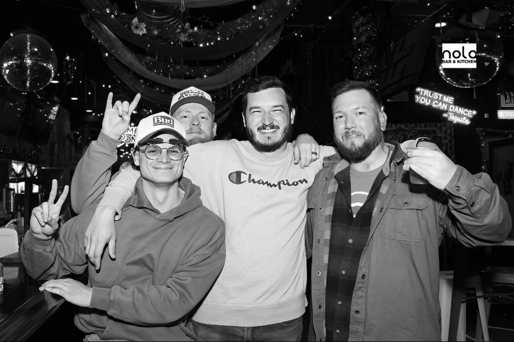
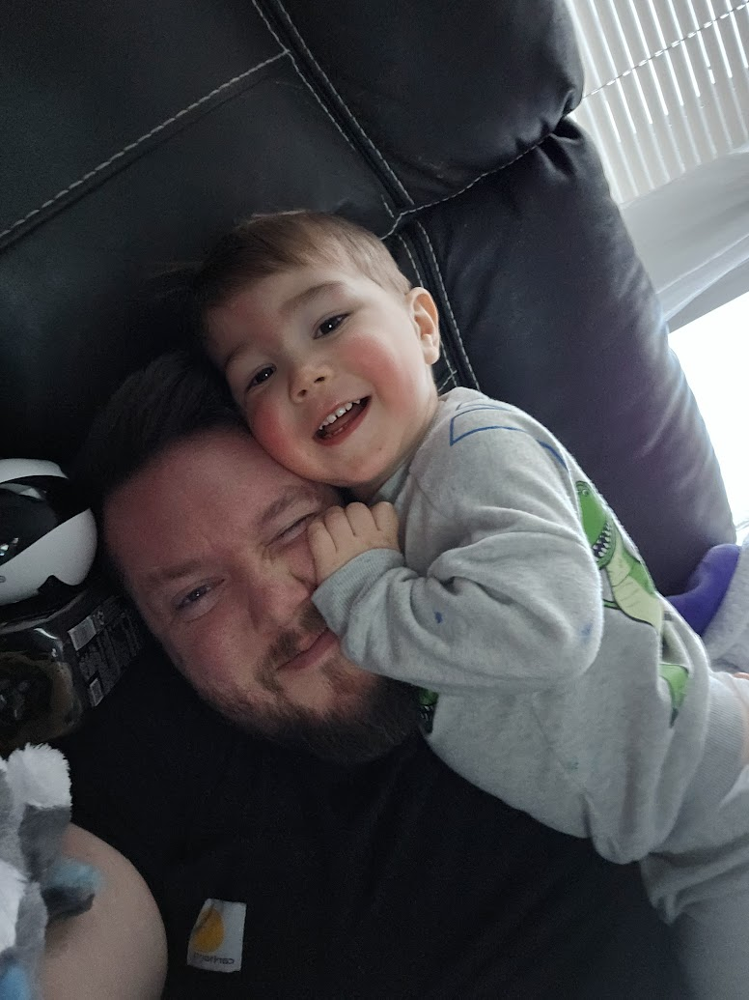
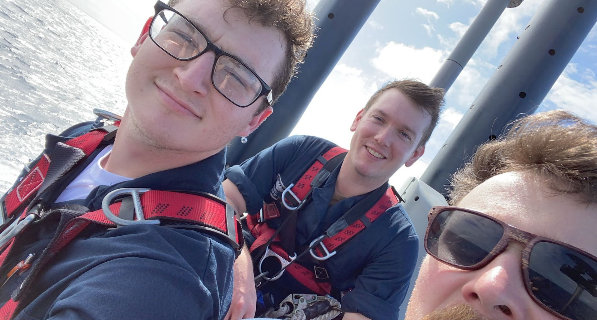
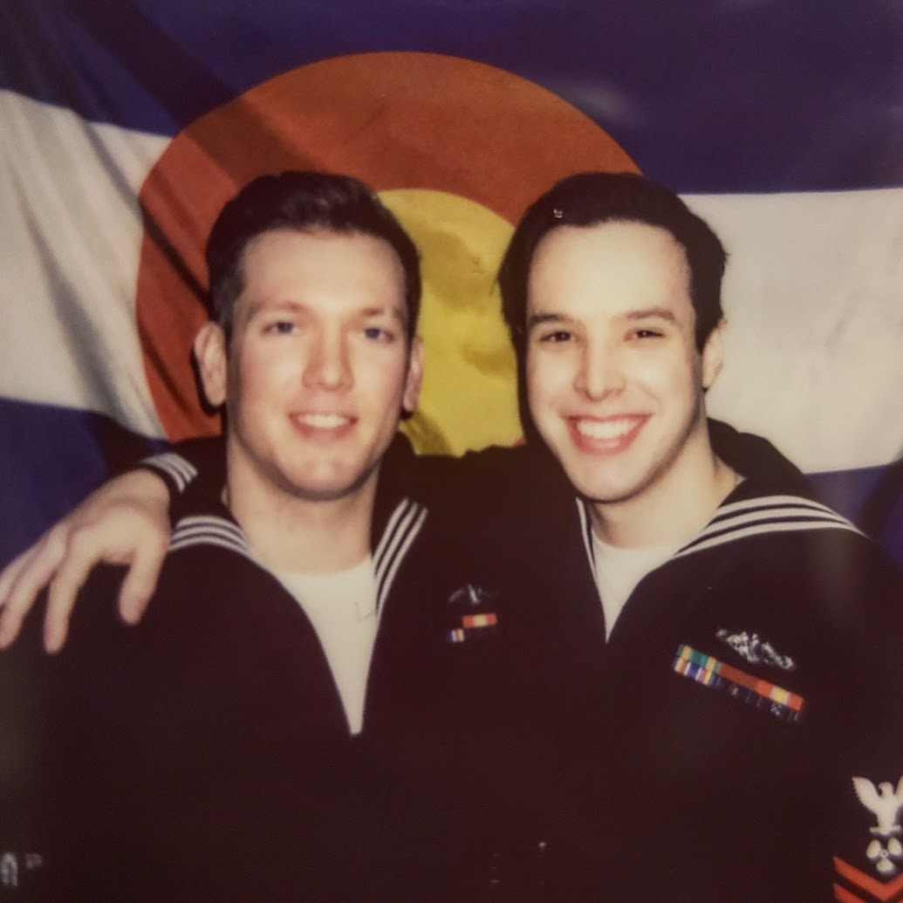
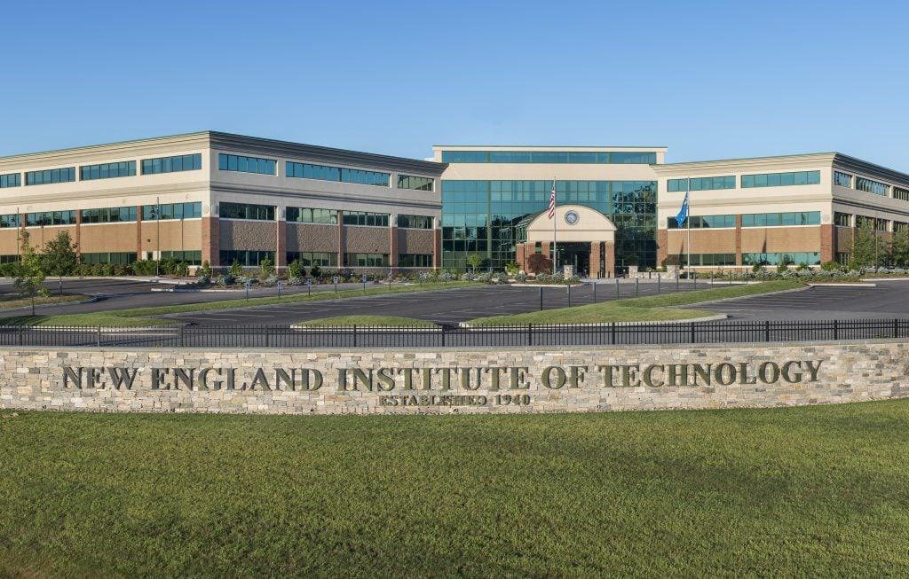

My name is Dylan Osborn, and I am 34 years old. I am originally from Minden, Louisiana. After graduating high school, I earned a degree in Industrial Instrumentation and worked as a technician at coal plants across the United States for a few years. In 2017, at the age of 25, I joined the United States Navy and was stationed on the USS Colorado (SSN-788) as a Torpedoman's Mate. During my service, I completed two EUCOM deployments and many underways. After being honorably discharged at age 30, I worked briefly for General Dynamics Electric Boat in Groton, CT as an STO Technician First Class. I was later asked to join the Submarine Technical Support Center, where I worked as an Engineering Technician V for three years. Today, I am using my VA benefits to attend New England Institute of Technology and work toward a better future for myself and my family. I live in Westerly, Rhode Island with my fiancee, Nicole, and our two-year-old son, Travis, who was named after my grandfather.


Education has played an important role in my life and career. Below are the schools I have attended:

In my free time, I enjoy several hobbies and interests that help me relax and have fun.


One website I enjoy visiting is ESPN.